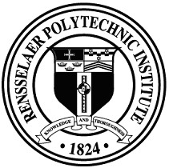

Education

Rensselaer Polytechnic Institute
BS in Computer Science - Cum Laude
Concentration in Artificial Intelligence and Data
Fall 2015 - Spring 2018 | Troy, NY | Cum. GPA 3.51
BS in Computer Science - Cum Laude
Concentration in Artificial Intelligence and Data
Fall 2015 - Spring 2018 | Troy, NY | Cum. GPA 3.51
Clark University
Spent two years in Liberal Arts program before transferring to RPI
Fall 2012 - Spring 2014 | Worcester, MA | GPA 3.63
Spent two years in Liberal Arts program before transferring to RPI
Fall 2012 - Spring 2014 | Worcester, MA | GPA 3.63
Experience
Formation Bio Senior Software Enginer | 08/2023 - Now / Software Engineer II | 10/2021 - 08/2023
- As a full-stack engineer, I applied React, NestJS and Python in creating various GraphQL-driven applications supporting patient recruitment for clinical trials, aiding TrialSpark's missing to bring new treatments to patients faster and more efficiently.
Memorial Sloan Kettering Cancer Center - Software Developer | 01/2021-10/2021
- Automated, optimized, and expanded upon system for transforming vast amounts of hospital data from disparate sources into the OMOP Common Data Model , a standard model for medical data the adoption of which will drive sharing information between researchers between institutions and improving research outcomes.
- Wrote RESTful APIs to facilitate interaction between terminology-focused graph databases with other internal applications.
Annalect Software Engineer | 11/2020-01/2021 - Junior Developer | 01/2019-11/2020
Annalect is the Marketing Science and Data arm of Omnicom Media Group.- Contributed on the front and back end to the development of two key applications within Omni, the Marketing Science and Data software suite used across agencies within Analects's parent company Omnicom Media Group. Both applications used Python 3 with Flask for an API driven by an AngularJS front-end.
- Developer on two applications within this suite, working on diverse tasks from the back end, to UI overhauls and front end feature enhancement with AngularJS and D3.
- Applied Python 3 (as well as common DS/ML packages such as scikit-learn, numpy, Pandas) SQL (PSQL, Redshift), JavaScript (D3, AngularJS), HTML, CSS, Docker, and AWS (Batch, Lambda, Redshift, S3).
- Used Scrum methodology in daily work as a part of an Agile team.
Annalect - Labs Intern | 09/2018-12/2018
- Worked on a variety of small and experimental projects within the Annalect R&D ("Labs") team.
- Created an extension to an existing web application made by the R&D team to produce automated natural language summaries of customer behavior in the consumer decision journey from large sets of demographic and clickstream data.
- Developed a recommendation engine which could quickly derive strongly correlated websites from clickstream data and find differences in browsing behavior between different brands, used internally for the development of taxonomies used in other Omni applications.(Python, Keras)
Perkins+Will - IT Intern | 06/2016-09/2016
- Diagnosed and fixed issues relating to architecture and design firm's computers, network, and terminal servers.
- Wrote VBScript and Batch scripts to automate certain typical laptop upgrade/maintenance processes.
- Reduced the average number of active support tickets by over 80%
Rensselaer Polytechnic Institute - Helpdesk Consultant | Fall 2016-Spring 2018
- Assisted the faculty and students of RPI find solutions to problems with hardware, software, and networking across a variety of machines and operating systems.